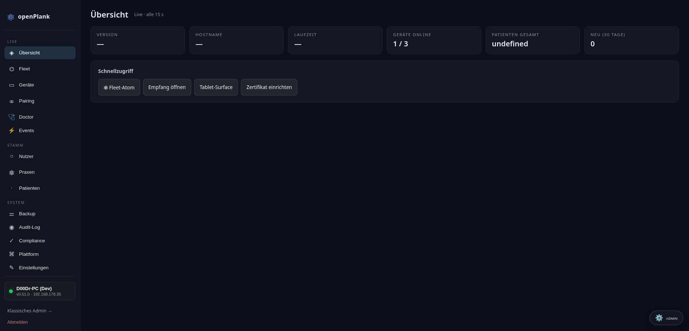
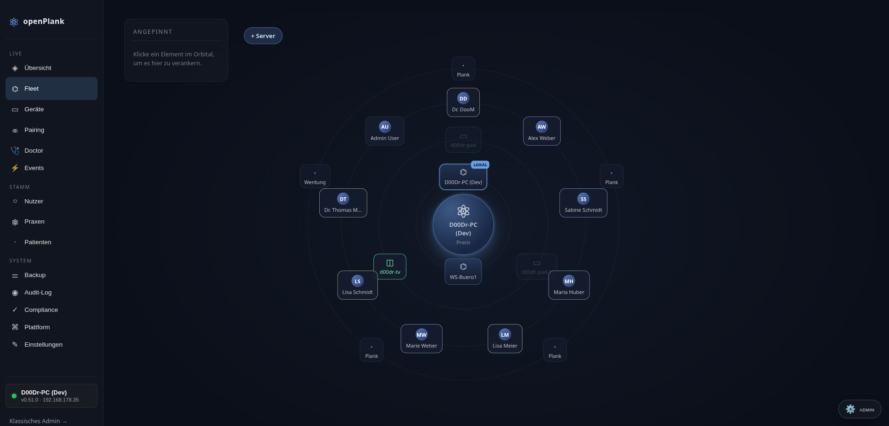
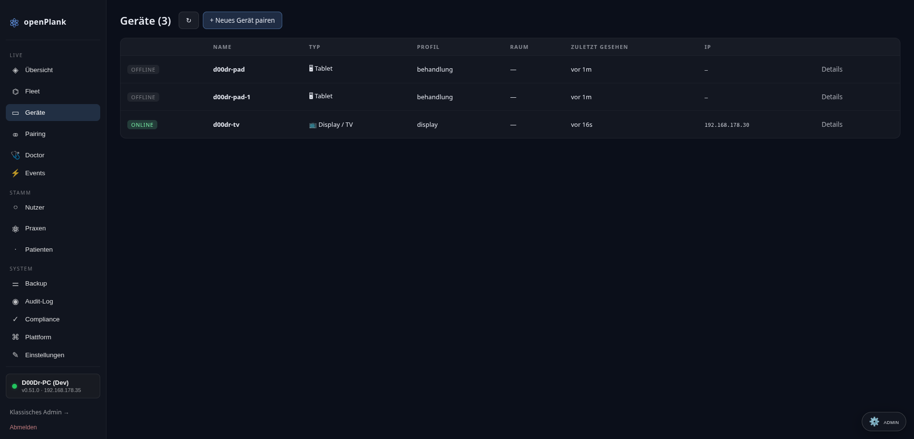
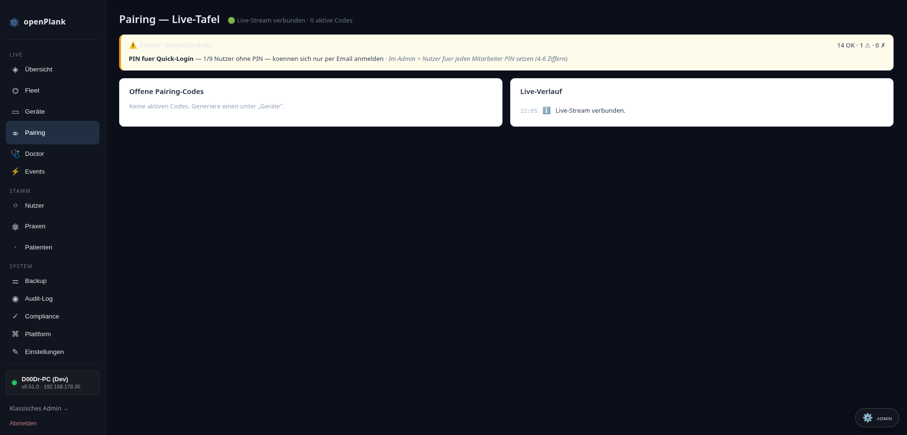
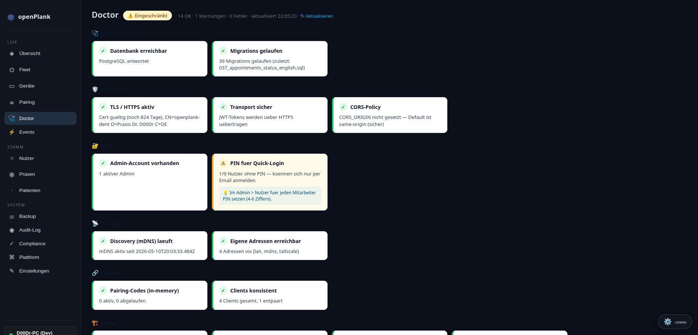
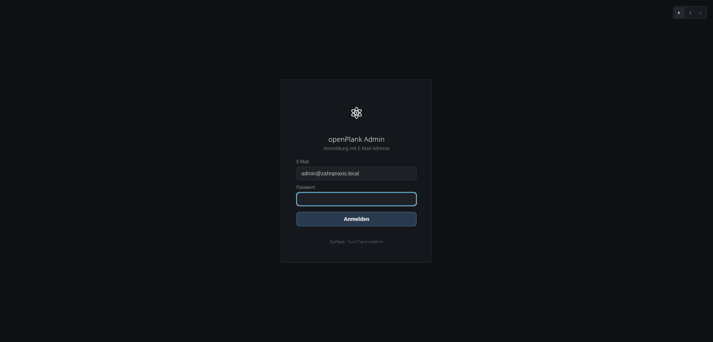

Behandler spricht → KI dokumentiert → Display zeigt → Glasses blenden ein. Ein System, vier Geräte, null Klicks. Datenschutzkonform, lokal-first, 100% Open Source.
Zahnarztpraxen in Deutschland arbeiten mit Werkzeugen, die für eine andere Zeit gebaut wurden. Die Folgen sind messbar — und vermeidbar.
Ärzte verbringen mehr Zeit mit dem Programm als mit dem Patienten. (Quelle: MIT/Harvard Study 2024)
iPad für Befund, PC für Abrechnung, TV für Röntgen — manuell synchronisiert, fehleranfällig.
Transkription als Add-on. KI hört zu, dokumentiert — aber antizipiert nichts, steuert nichts.
Patientendaten auf Servern in Dublin oder Redmond. Closed Source. Keine Kontrolle.
Klassische Software: Du klickst, das Programm reagiert. openPlank: Die KI antizipiert, arrangiert, dokumentiert — du bestätigst nur noch.
KI hört im Hintergrund mit, zeigt kontextbezogene Informationen, aktualisiert Sidebar mit relevanten Daten — ohne dass jemand einen Knopf drückt.
KI erkennt gesprochene Befunde, markiert Zähne im Schema, zeigt Suggestion-Cards am relevanten Zahn. 1-Tap-Bestätigung — fertig.
Automatisches Patient-Briefing beim Betreten des Behandlungsraums: Letzte Befunde, Risiko-Score, priorisierte Handlungsempfehlungen.
KI fasst zusammen was passiert ist, generiert §630f BGB-konformen Behandlungseintrag, schlägt Abrechnungspositionen vor.
Das Bubble-Ring-Modell: Kontext erscheint organisch um den Fokus. Keine Menüs, keine Navigation, keine Suche.
Patient-Tabs wandern mit dem Patienten durch die Praxis. Alle Geräte sehen denselben State, live synchronisiert via EventBus. Pairing per QR — kein IT-Admin nötig.
Touch + Voice parallel, voller Workflow, Zahnstatus mit Auto-Advance
Zeigt automatisch was der Behandler fokussiert — Röntgen, Patient-Cockpit, Allergien
Allergien rechts oben, KI-Vorschläge unten, Read-only, Voice-only
Patient-Tabs erscheinen live, Telefon-Klingeln → Patient-Card automatisch
1 EventBus · 5 Surfaces · Live-Sync via WebSocket
Der deutsche Markt stellt höchste Anforderungen an Praxissoftware. openPlank erfüllt sie — by Design, nicht als Nachrüstung.
Unsere Oberfläche ist für Zahnärzte gebaut — nicht für IT-Admins. Touch-first, intuitiv, in Echtzeit. Hier sind Screenshots aus dem laufenden System.






27 Anbieter für Zahnarzt-Software in Deutschland — aber keiner macht, was openPlank macht.
| Feature | Dampsoft | CGM Z1 | Doctos | openPlank |
|---|---|---|---|---|
| KI-Modus | Add-on | Button | Passiv (Transkription) | ✅ Proaktiv (Ambient + Predictive) |
| Voice-First | ❌ | ❌ | 🟡 Transkription | ✅ Ambient + Touch parallel |
| Multi-Device | ❌ | ❌ | ❌ | ✅ EventBus, Live-Sync |
| Open Source | ❌ | ❌ | ❌ | ✅ AGPL-3.0 |
| Cloud-Optional | ❌ | ❌ | ❌ (Cloud-only) | ✅ Lokal-First |
| DSGVO-by-Design | 🟡 | 🟡 | ❌ | ✅ Daten bleiben in Praxis |
| Selbstlernend | ❌ | ❌ | ❌ | ✅ Praxis-spezifisch |
Aktuell läuft der erste Heimtest (Hannes' Praxis, Kösching/Ingolstadt). Hier ist, woran wir arbeiten.
openPlank-dent ist Open Source — nicht als Marketing, sondern als Architektur-Entscheidung. Praxen können Code prüfen, erweitern, selbst hosten. Kein Vendor-Lock-in, keine Cloud-Pflicht.
Wenn wir untergehen, geht die Praxis nicht mit. Code bleibt, Community bleibt.
Datenschutz ist kein Versprechen, sondern prüfbar. §203 StGB verlangt das.
Module, Plugins, Erweiterungen — von Praxen für Praxen. Keine Feature-Roadmap aus dem Marketing.
Mehr Augen sehen mehr Bugs. Security-by-Obscurity ist ein Mythos.
Ein kleines Team, das groß denkt. Kein Großraumbüro, kein Buzzword-Bullshit. Nur Code, Vision, und Hingabe.
Bruder ist Zahnarzt (Hannes, Kösching/Ingolstadt) — das ist die Demo-Zielgruppe. Nimmt Security ernst („medizinische Standards").
Coding, Doku, Operations, Memory — 24/7. Macht Code, keine Witze. Direkt, technisch, kein Gelaber.
Strategie, Funding, Investor-Relations, Markt-Eintritt. Wenn du das hier liest, bist du vielleicht Vince.